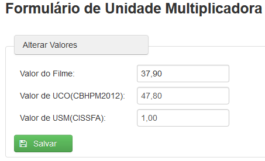

UCO são os valores das Unidades de Custo Operacional que servirão para o cálculo dos valores dos procedimentos.
Filme são os valores definidos pelo Colégio Brasileiro de Radiologia, também utilizados nos cálculos dos valores dos procedimentos.
USM
Clicando em Unidade Multiplicadora surgirá a tela para alterar os valores de Filme, UCO e USM sempre que houver reajuste destes.(Fig.11).

Fig.11 Tela de valores de UCO, Filme e USM